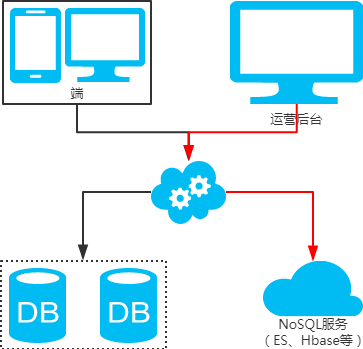

数据库之互联网常用分库分表方案¶
一、数据库瓶颈¶
不管是IO瓶颈，还是CPU瓶颈，最终都会导致数据库的活跃连接数增加，进而逼近甚至达到数据库可承载活跃连接数的阈值。在业务Service来看就是，可用数据库连接少甚至无连接可用。接下来就可以想象了吧（并发量、吞吐量、崩溃）。
1、IO瓶颈、¶
第一种：磁盘读IO瓶颈，热点数据太多，数据库缓存放不下，每次查询时会产生大量的IO，降低查询速度 -> 分库和垂直分表。
第二种：网络IO瓶颈，请求的数据太多，网络带宽不够 -> 分库。
2、CPU瓶颈¶
第一种：SQL问题，如SQL中包含join，group by，order by，非索引字段条件查询等，增加CPU运算的操作 -> SQL优化，建立合适的索引，在业务Service层进行业务计算。
第二种：单表数据量太大，查询时扫描的行太多，SQL效率低，CPU率先出现瓶颈 -> 水平分表。
二、分库分表¶
1、水平分库¶

- 概念：以字段为依据，按照一定策略（hash、range等），将一个库中的数据拆分到多个库中。
- 结果：
- 每个库的结构都一样；
- 每个库的数据都不一样，没有交集；
- 所有库的并集是全量数据；
- 场景：系统绝对并发量上来了，分表难以根本上解决问题，并且还没有明显的业务归属来垂直分库。
- 分析：库多了，io和cpu的压力自然可以成倍缓解。
2、水平分表¶

- 概念：以字段为依据，按照一定策略（hash、range等），将一个表中的数据拆分到多个表中。
- 结果：
- 每个表的结构都一样；
- 每个表的数据都不一样，没有交集；
- 所有表的并集是全量数据；
- 场景：系统绝对并发量并没有上来，只是单表的数据量太多，影响了SQL效率，加重了CPU负担，以至于成为瓶颈。
- 分析：表的数据量少了，单次SQL执行效率高，自然减轻了CPU的负担。
3、垂直分库¶

- 概念：以表为依据，按照业务归属不同，将不同的表拆分到不同的库中。
- 结果：
- 每个库的结构都不一样；
- 每个库的数据也不一样，没有交集；
- 所有库的并集是全量数据；
- 场景：系统绝对并发量上来了，并且可以抽象出单独的业务模块。
- 分析：到这一步，基本上就可以服务化了。例如，随着业务的发展一些公用的配置表、字典表等越来越多，这时可以将这些表拆到单独的库中，甚至可以服务化。再有，随着业务的发展孵化出了一套业务模式，这时可以将相关的表拆到单独的库中，甚至可以服务化。
4、垂直分表¶

- 概念：以字段为依据，按照字段的活跃性，将表中字段拆到不同的表（主表和扩展表）中。
- 结果：
- 每个表的结构都不一样；
- 每个表的数据也不一样，一般来说，每个表的字段至少有一列交集，一般是主键，用于关联数据；
- 所有表的并集是全量数据；
- 场景：系统绝对并发量并没有上来，表的记录并不多，但是字段多，并且热点数据和非热点数据在一起，单行数据所需的存储空间较大。以至于数据库缓存的数据行减少，查询时会去读磁盘数据产生大量的随机读IO，产生IO瓶颈。
- 分析：可以用列表页和详情页来帮助理解。垂直分表的拆分原则是将热点数据（可能会冗余经常一起查询的数据）放在一起作为主表，非热点数据放在一起作为扩展表。这样更多的热点数据就能被缓存下来，进而减少了随机读IO。拆了之后，要想获得全部数据就需要关联两个表来取数据。但记住，千万别用join，因为join不仅会增加CPU负担并且会讲两个表耦合在一起（必须在一个数据库实例上）。关联数据，应该在业务Service层做文章，分别获取主表和扩展表数据然后用关联字段关联得到全部数据。
三、分库分表工具¶
- sharding-sphere：jar，前身是sharding-jdbc；
- TDDL：jar，Taobao Distribute Data Layer；
- Mycat：中间件。 注：工具的利弊，请自行调研，官网和社区优先。
四、分库分表步骤¶
根据容量（当前容量和增长量）评估分库或分表个数 -> 选key（均匀）-> 分表规则（hash或range等）-> 执行（一般双写）-> 扩容问题（尽量减少数据的移动）。
五、分库分表问题¶
1、非partition key的查询问题（水平分库分表，拆分策略为常用的hash法）¶
- 端上除了partition key只有一个非partition key作为条件查询
- 映射法

- 基因法

- 映射法
注：写入时，基因法生成user_id，如图。关于xbit基因，例如要分8张表，23=8，故x取3，即3bit基因。根据user_id查询时可直接取模路由到对应的分库或分表。根据user_name查询时，先通过user_name_code生成函数生成user_name_code再对其取模路由到对应的分库或分表。id生成常用snowflake算法。
2. 端上除了partition key不止一个非partition key作为条件查询
* 映射法
 * 冗余法
* 冗余法
 注：按照order_id或buyer_id查询时路由到db_o_buyer库中，按照seller_id查询时路由到db_o_seller库中。感觉有点本末倒置！有其他好的办法吗？改变技术栈呢？
注：按照order_id或buyer_id查询时路由到db_o_buyer库中，按照seller_id查询时路由到db_o_seller库中。感觉有点本末倒置！有其他好的办法吗？改变技术栈呢？
3. 后台除了partition key还有各种非partition key组合条件查询
* NoSQL法

* 冗余法

2、非partition key跨库跨表分页查询问题（水平分库分表，拆分策略为常用的hash法）¶
注：用NoSQL法解决（ES等）。
3、扩容问题（水平分库分表，拆分策略为常用的hash法）¶
- 水平扩容库（升级从库法）
 注：扩容是成倍的。
注：扩容是成倍的。 - 水平扩容表（双写迁移法）

第一步：（同步双写）应用配置双写，部署； 第二步：（同步双写）将老库中的老数据复制到新库中； 第三步：（同步双写）以老库为准校对新库中的老数据； 第四步：（同步双写）应用去掉双写，部署；
注：双写是通用方案
六、分库分表总结¶
- 分库分表，首先得知道瓶颈在哪里，然后才能合理地拆分（分库还是分表？水平还是垂直？分几个？）。且不可为了分库分表而拆分。
- 选key很重要，既要考虑到拆分均匀，也要考虑到非partition key的查询。
- 只要能满足需求，拆分规则越简单越好。